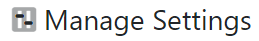
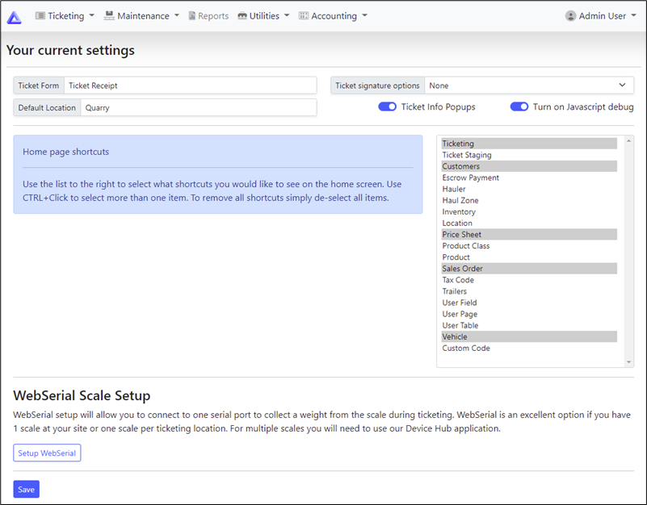
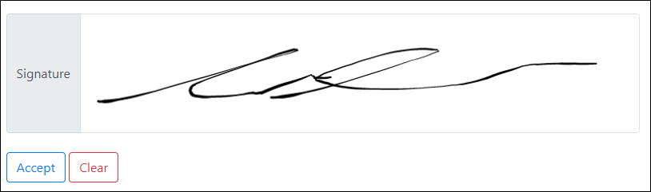
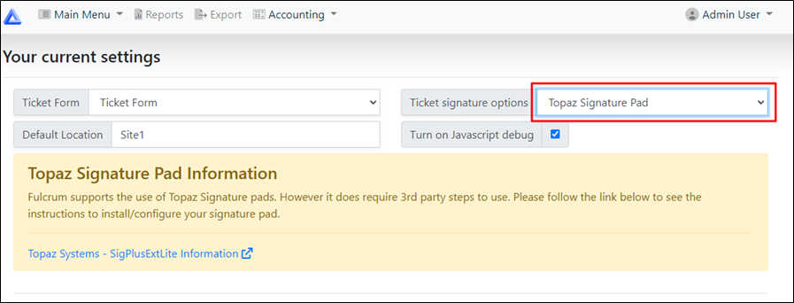
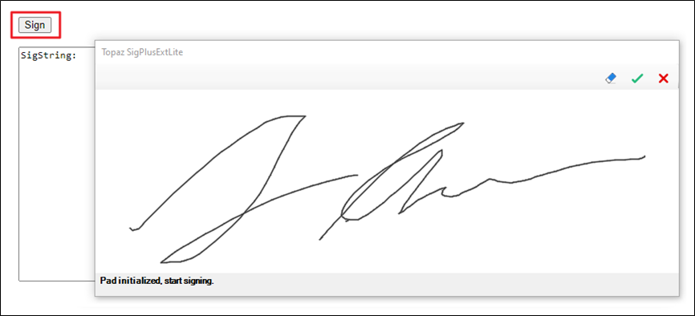
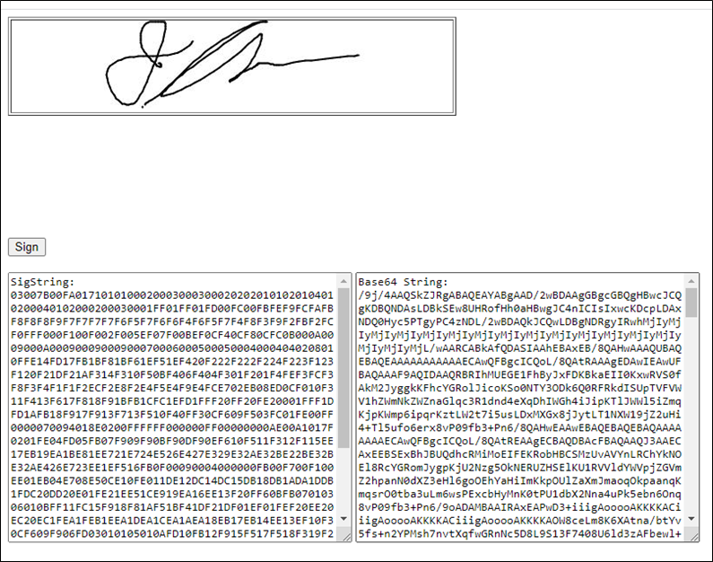
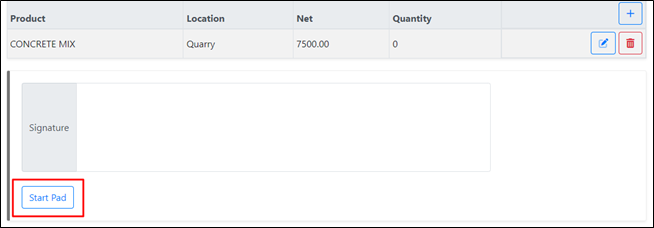
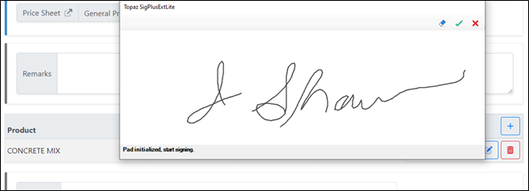
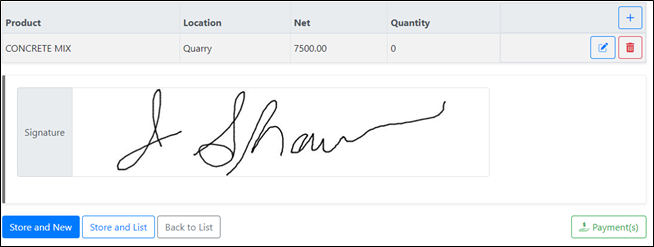

Manage Settings

This menu is used to control ticketing layout. If a field value is entered or a setting is turned on, it will be reflected in your ticket creation screen.
Click on the 'Setup WebSerial' button if you would like to use the WebSerial option, or if you would like to use Device Hub you can access it from the Admin Tools menu.
|
Ticket Form |
Select Ticket Receipt or Ticket Form. |
|
Ticket Signature options |
Adds a signature box on the create ticket screen. |
|
Default Location |
Pick the default location that will be used in ticket details when creating a ticket. |
No Signature
If you do not want a signature box to show on the ticket screen, you can select None

On screen Signature
If you Selecting On screen Signature, a signature box will be added to your create ticket screen, this is mainly used if your will be using a touch screen device for when creating tickets.
Once the signature has been captured, click the 'Accept' button to save the signature, or 'Clear' to start over.

Topaz Signature Pad
Topaz SigPlusExtLite software tools allows you to capture handwritten signatures in Google Chrome, Microsoft Edge (Chromium), Mozilla Firefox, and Opera browsers using
Topaz Signature Pads and integrate them into a webpage.
Click on the link provided to Topaz's website and follow the instructions provided to install/configure your signature pad.

Installing Topaz SigPlusExLite
Download and save Topaz SigPlusExtLite to your computer’ from the following URL: www.topazsystems.com/software/SigPlusExtLite.exe
Right click on the SigPlusExtLite icon and select "Run as administrator".
Note: You will not see a desktop shortcut, since it is just a driver installation file.
Installing Topaz SigPlusExLite Browser Extension
Installation steps for adding the Topaz SigPadExLite extension vary for each browser. Refer to section 3.2 of the Topaz Installation Guide to find directions for your preferred browser.
You can browse to https://sigplusweb.com/sign_chrome_ff_sigplusextlite.html to test the sigplus browser extension.
Click on the Sign button to bring up the Topaz sigplus window (be patient, this screen could take 4-5 seconds to open).
Write a test signature on your sig pad to make sure it is captured. You can erase the signature on screen with the eraser button, or cancel out of the capture window by hitting the red X.

Click the green check box to generate the sig strings and to show the captured signature.

Using Signature Pad for ticketing
Confirm that your Ticket signature options field is set to Topaz Signature Pad under Manage Settings.
On the Create Ticket screen, click the Start Pad button to open the Topaz Signature window.

When the window opens, use the sigpad to enter a signature.
You can erase the signature on screen with the eraser button, or cancel out of the capture window by hitting the red X.
Click the green check box to save the signature and close out the signature window.

The captured signature will show in the signature box and will be saved on ticket.

Created with the Personal Edition of HelpNDoc: Full-featured Kindle eBooks generator